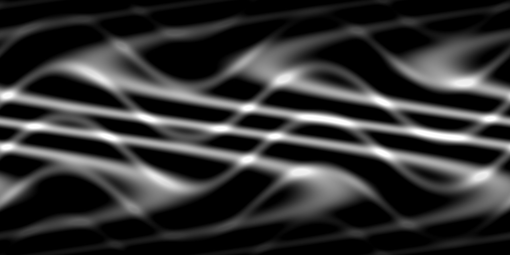
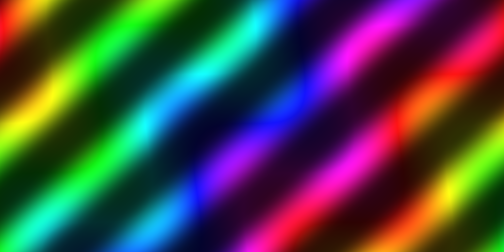
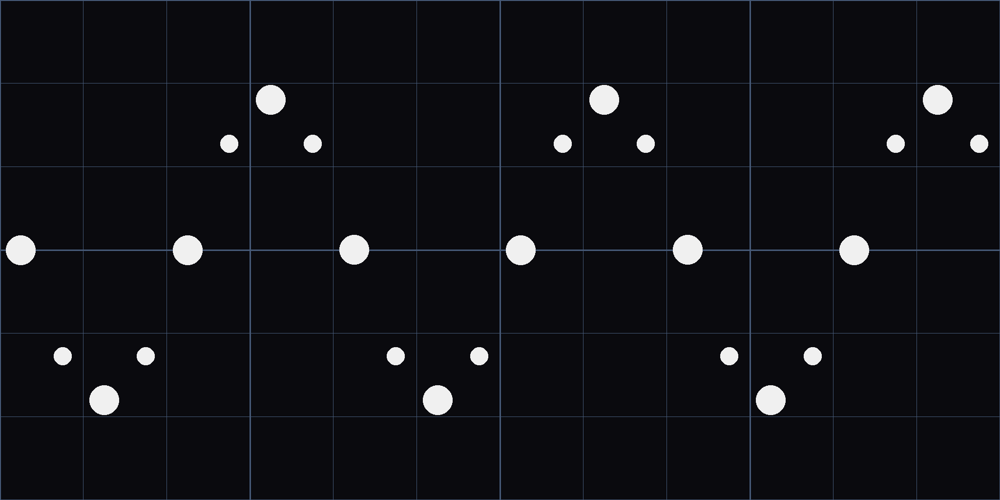
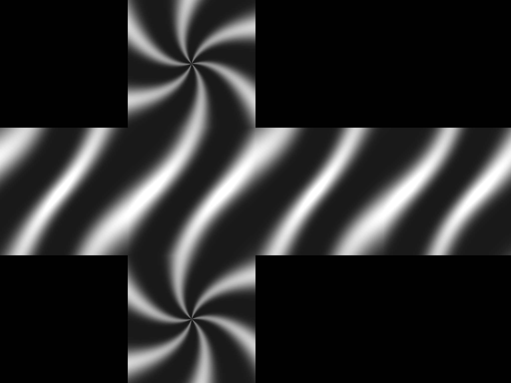
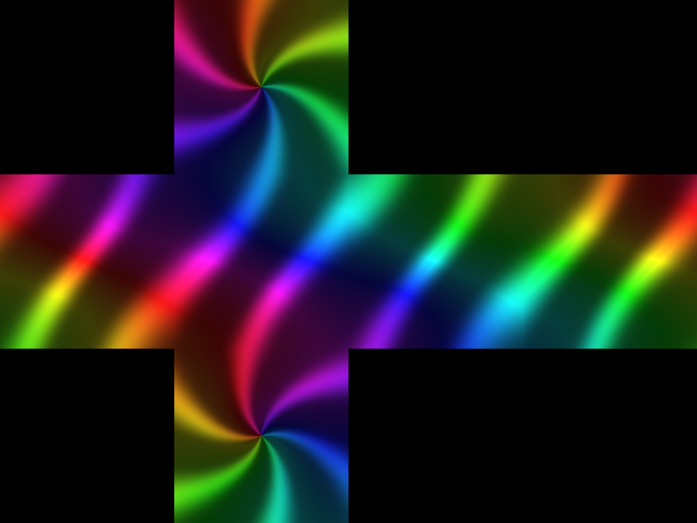

MirrorBallLightController R19
サンプルCookieマスク
このフォルダのPNGはUnityプロジェクトのAssets配下へ保存して試せます。2D画像は左右シームレス、Cubemap Crossは同じ3D方向関数から6面を生成しています。
2D Cookie
Grayscale Wave Bands

白い場所ほど光点が表示され、黒い場所ほど消えます。Cookie色の混合量=0、マスクの強さ=0.6～1を推奨します。
Color Spiral

明暗マスクと色を同時に利用する例です。Cookie色の混合量=0.5～1にすると色が反映されます。
Calibration Grid

Tiling、Offset、回転方向、左右の継ぎ目を確認する調整用Textureです。完成演出よりも設定確認に使用します。
Cubemap Cookie
Grayscale Cross

マスク専用。Texture ShapeをCubeへ変更してください。
Color Cross

方向別の色と明暗を持つ全天球Cookieです。
Unity設定
| 種類 | Import Settings | Controller |
|---|---|---|
| 2D | Texture Shape=2D Wrap Mode=Repeat Filter=Bilinear | 投影方式=2D Cookie 2D投影Cookieへ登録 |
| Cubemap Cross | Texture Shape=Cube Mapping=Autoまたは6 Frames Layout Mip Maps=ON推奨 | 投影方式=Cubemap Cookie Cubemap投影Cookieへ登録 |
白・黒の意味: ShaderはRGB輝度とAlphaをマスクに使います。白=表示、黒=消灯、灰色=中間強度です。
必須: 設定後はController最下部の「現在の設定をマテリアルへ反映・保存」を押してからVRChatへアップロードしてください。
推奨開始値
- マスクのみ: マスク強度 0.8、色混合 0
- カラーCookie: マスク強度 0.6、色混合 0.7
- 回転: 5～15度/秒
- 2D Tiling: (1,1)、Offset: (0,0)